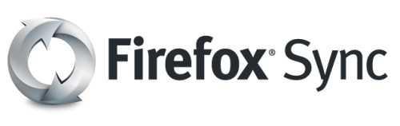

16 mars 2011
La Distribution et Firefox Sync
Aujourd'hui je vais vous parler de La Distribution qui vient d'être mis à jour en version "Europe".
Mais qu'est-ce que "La Distribution" ? C'est une plate-forme développée en PHP qui permet l'installation d'applications web comme WordPress (Blog), DokuWiki (Wiki), bbPress (Forums), MoonMoon (Agrégateur RSS), Status.net (Microblogage), Firefox Sync (Synchronisation de paramètres et marques-page).
L'installation d'application est aussi simple que sur smartphone, on clique sur l'application choisie, on la paramètre et elle est installée ! Le modèle d'installation des applications ressemble à une distribution Linux, en effet, La Distribution gère des dépôts via des URLs et il est possible d'installer des applications et des bibliothèques.
Une fois les services désirés installés, La Distribution permet de s'y connecter avec un seul identifiant. Ainsi il est possible de définir un accès pour tel ou tel service, à partir des utilisateurs enregistrés dans La Distribution. De même l'interface des applications s'intègre à La Distribution. Une barre en haut permet l'accès aux différents services et les thèmes de chaque application se calquent avec les couleurs de La Distribution. Dans les réglages il est facile de réaliser une sauvegarde des données pour ensuite les ré-importer. Cette plateforme est extensible car open-source sous licence GPL/MIT.
Ce n'est pas tout, La Distribution fait office de fournisseur OpenID et se connecte à des services comme DropBox et Twitter.
Vous avez le choix d'installer La Distribution sur votre serveur ou bientôt de réserver votre serveur sur AppSlots.


Parmi les services que j'ai cité, Firefox Sync me semble le plus intéressant car l'installation d'un serveur n'est pas chose aisée. Dans La Distribution, l'installation est plus que simple, l'administrateur rajoute l'application via l'interface et les utilisateurs désirant profiter du service se créent un compte sur La Distribution et peuvent ainsi paramétrer leur Firefox avec l'adresse du serveur correspondant. Pour rappel, Firefox Sync est une fonction de Mozilla Firefox 4 (PC et Mobile) pour synchroniser les onglets ouverts, marques-pages, historique et paramètres de votre navigateur entre plusieurs profils (au Bureau, sur votre téléphone portable par exemple). Elle est disponible depuis Firefox 3.6 en tant qu'extension et sera donc intégrée à Firefox 4 qui sort le 22 mars. Toutes les données sont bien entendues cryptées côté client grâce à une clé de synchronisation (ou sync key). Ainsi, que ce soit sur les serveurs de Mozilla ou votre propre serveur, vos données sont protégées. Pour conclure, La Distribution est une plateforme très intéressante, intuitive et simple à mettre en place, elle est disponible en français et anglais dans le même fichier.
Commentaires 0
Aucun commentaire.